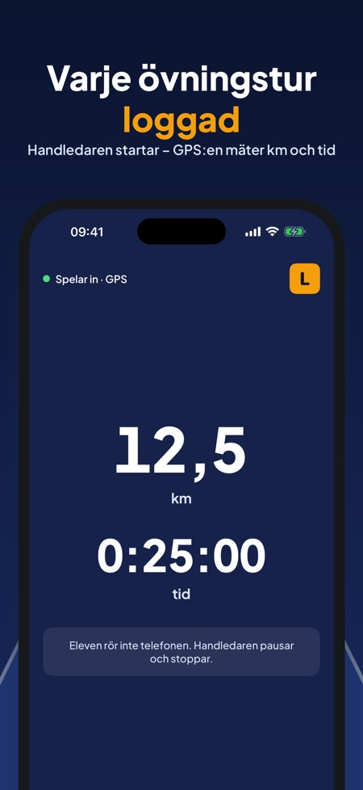
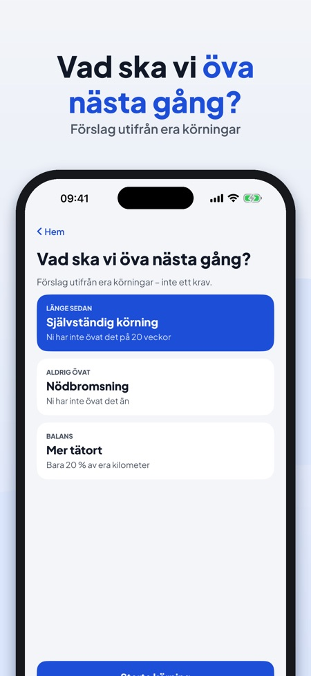
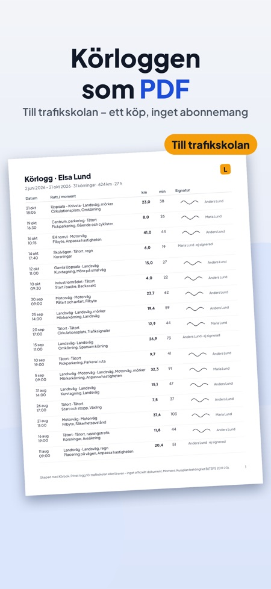

Handledaren startar inspelningen och iPhonens GPS mäter sträcka och tid. Efter turen loggar ni förhållanden och moment, och handledaren signerar på skärmen.



Eleven och handledaren vid övningskörning för körkort B, i Sverige, Finland eller Danmark.
Nej, inget konto behövs.
Med iPhonens GPS under körningen. Du kan också lägga till en körning utan GPS i efterhand.
Ja, du väljer bland annat mörker, regn och halka efter turen och ser tiden i mörker i statistiken.
Ja, hela körloggen kan exporteras som PDF med datum, sträcka, moment och signatur. Förhandsvisning finns även utan köp.
Inspelning, turer, totaler, momentlistan, checklistan, en handledare och de tre första signaturerna.
Nej, Körbok Full är ett engångsköp. Inget abonnemang och ingen reklam.
Nej, Körbok är en privat övningslogg utan koppling till Transportstyrelsen, Trafikverket, Traficom eller Færdselsstyrelsen.
Loggboken för övningskörning med handledare – i Sverige, Finland och Danmark. Inget konto behövs.
Handledaren startar inspelningen, iPhonens GPS mäter sträcka och tid. Efter turen väljer ni vägtyp, förhållanden och de moment ni övade, och handledaren signerar på skärmen. Så vet ni alltid hur långt ni har kommit och vad som återstår inför uppkörningen.
SPELA IN VARJE TUR
• Start, paus och stopp – stora knappar som handledaren trycker på
• Sträcka och tid med iPhonens GPS, ritad rutt för varje tur
• Lägg till en körning utan GPS i efterhand
• Eleven rör inte telefonen: skärmen under körningen går bara att läsa
EFTER TUREN
• Tätort, landsväg, motorväg, mörker, regn, halka, rusningstrafik
• Momenten ni övade, en anteckning och handledarens signatur
MOMENT ENLIGT KURSPLANEN
• Momentlista för behörighet B, grupperad: manövrering, trafik, särskilda förhållanden
• Varje moment: ej övat → övat → säkert
• Listan följer landet: Sverige, Finland eller Danmark
SE HUR LÅNGT NI HAR KOMMIT
• Kilometer, timmar, antal körningar och tid i mörker
• Ett eget mål (det finns inget lagkrav på antal km)
• Förslag på vad ni ska öva nästa gång: moment som var länge sedan, förhållanden ni aldrig kört i
INFÖR UPPKÖRNINGEN
• Datum och plats för provet, nedräkning och checklista
• Plan för sista veckan med de moment som ännu inte är säkra
• Påminnelser 14, 7 och 1 dag före provet
• Länkar till myndigheternas sidor
PERSONER OCH PÅMINNELSER
• Elev och upp till två handledare med giltighetsdatum
• Påminnelse 30 dagar innan ett tillstånd går ut
PDF FÖR TRAFIKSKOLAN
• Hela körloggen som PDF med datum, sträcka, moment och signatur
• Förhandsvisning av PDF:en även utan köp
Inspelning, turer, totaler, momentlistan, checklistan, en handledare och de tre första signaturerna fungerar utan köp. Ett engångsköp (Körbok Full) låser upp PDF-export, två handledare med signatur, förslagen om vad ni ska öva, statistik för mörker, motorväg och tätort och planen inför uppkörningen. Inget abonnemang, ingen reklam.
Turerna och positionerna stannar på din iPhone. Platsen används bara medan en tur spelas in. Appen kan skicka anonym användningsstatistik via Google Analytics for Firebase (t.ex. vilka skärmar och knappar som används, köp i appen och ungefärligt land) – aldrig position eller rutter. Det skickas bara om du slår på det (vid start eller i Inställningar).
Körbok är en privat övningslogg, inget officiellt dokument, och har ingen koppling till Transportstyrelsen, Trafikverket, Traficom eller Færdselsstyrelsen. Använd inte telefonen under körning.